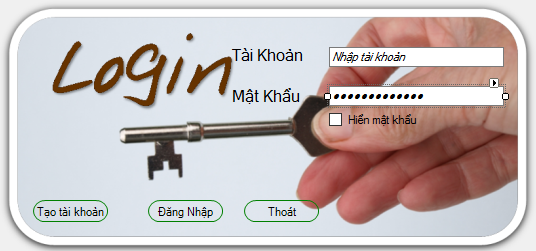
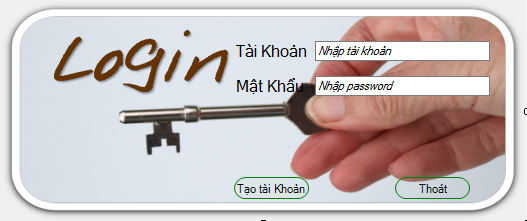
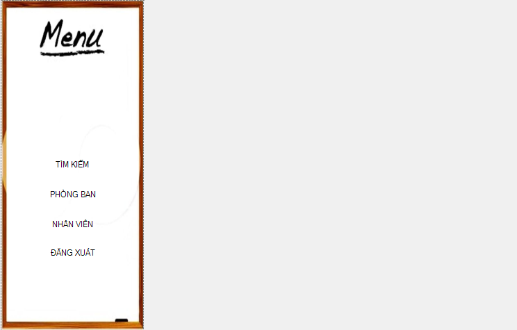
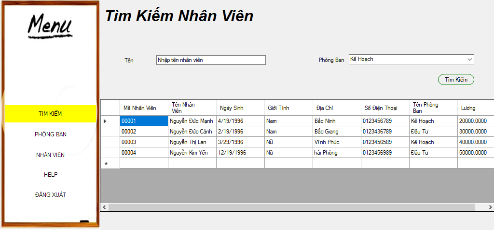
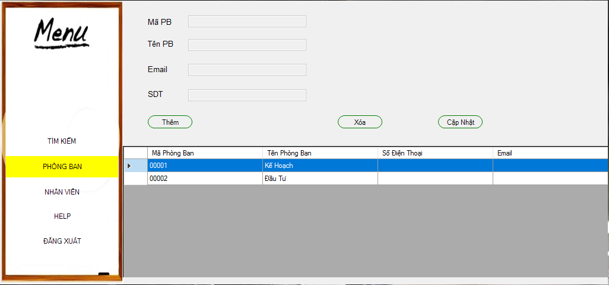
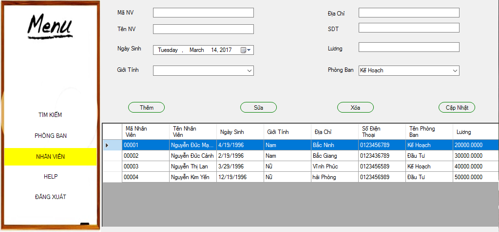

1.Đầu tiên,các bạn phải đăng nhập bằng tài khoản đã được cấp phát.
Nếu chưa có tài khoản,hãy ấn vào nút đăng ký để tạo tài khoản mới nhé. 
Sau khi đăng ký xong,bạn hãy nhập tài khoản vừa đăng ký và đăng nhập nhé.
2.Sau khi đăng nhập thành công,màn hình chính xuất hiện.
Ở màn hình chính,có 4 module cơ bản,đó là:Tìm kiếm,Phòng ban,Nhân viên,Đăng xuất.
Tại đó,người dùng có thể ấn vào các nút tùy theo mục đích sử dụng.
a.Khi ấn vào module Tìm kiếm,người dùng có thể tìm kiếm nhân viên thông qua mã nhân viên.
b.Khi ấn vào Modul Phòng ban,người dùng có thể thêm phòng ban,sửa phòng ban hoặc xóa phòng ban.
Nhớ ấn nút cập nhật để cập nhật lại phòng ban nhé
c.Khi ấn vào Modul nhân viên,cũng có các chức năng thêm nhân viên,sửa thông tin nhân viên,xóa nhân viên cho người dùng lựa chọn
Và vẫn phải nhớ ấn nút cập nhật nhé.
d.Khi muốn kết thúc chương trình,các bạn ấn vào module Thoát nhé.